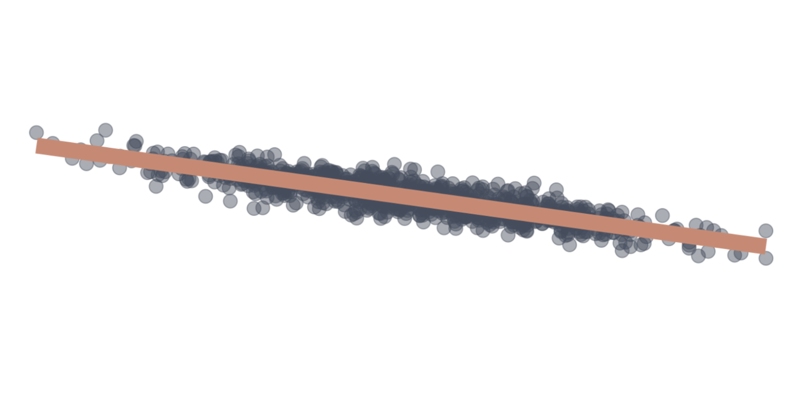
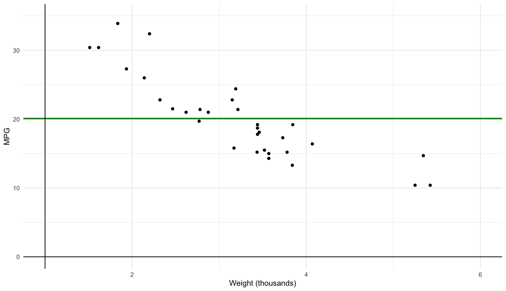
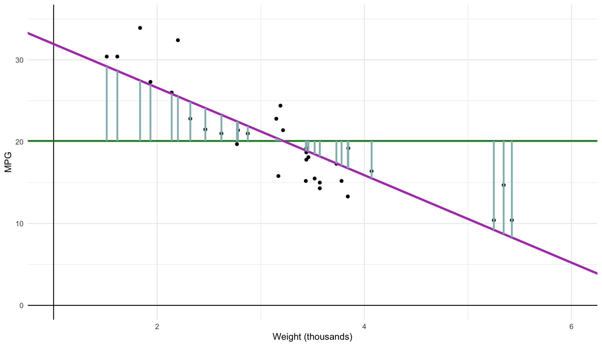
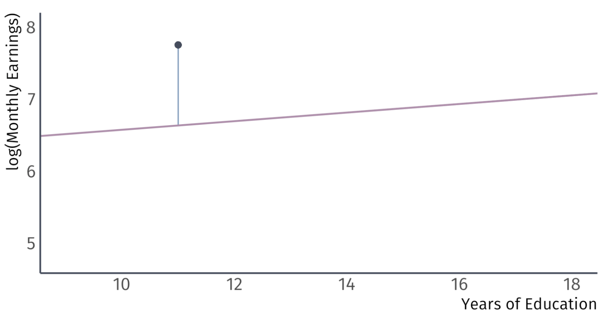
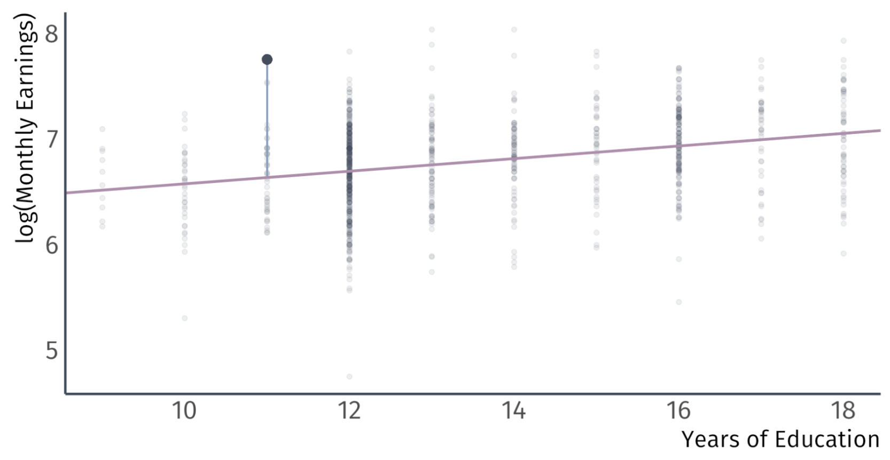
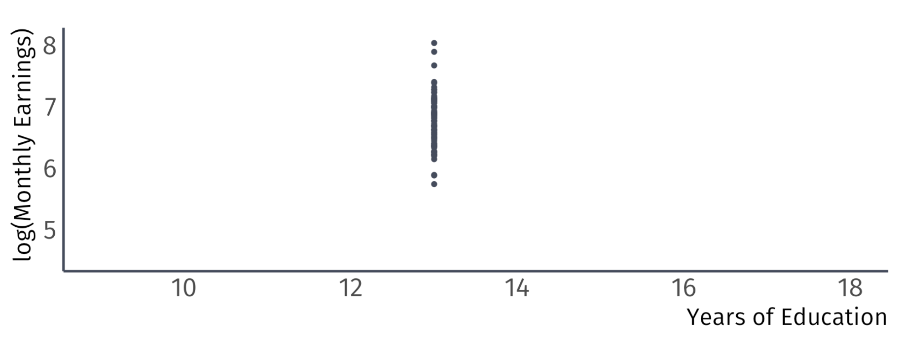
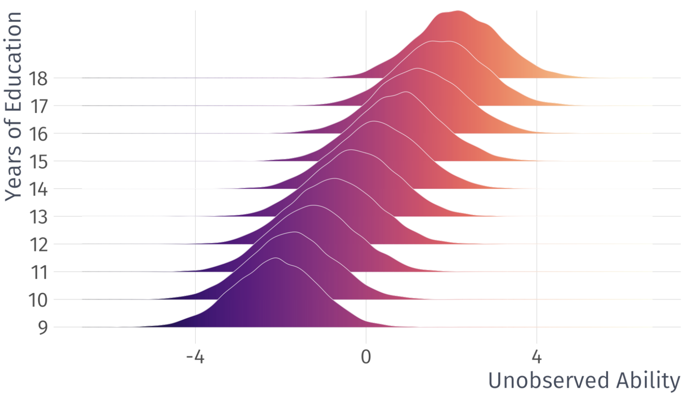
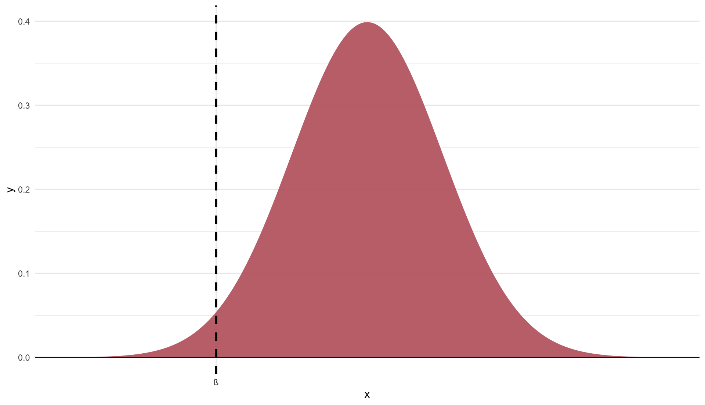
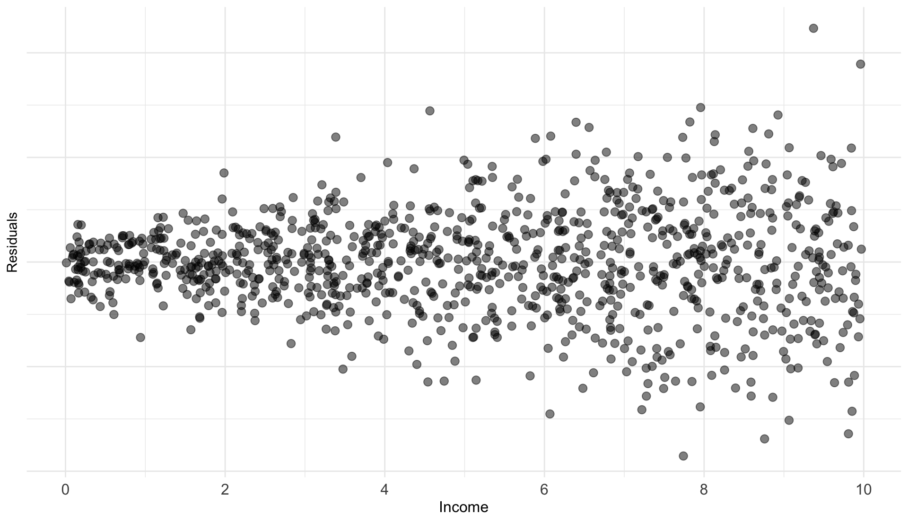

Estimators Part II
EC 320 - Introduction to Econometrics
Jose Rojas-Fallas
2025
OLS Properties
Important Properties
There are three important OLS properties
- The point \((\bar{x}, \bar{y})\) is always on the regression line
- Residuals sum to zero: \(\sum_{i}^{n} \hat{u}_{i} = 0\)
- The sample covariance between the independent variable and the residuals is zero: \(\sum_{i}^{n} x_{i}\hat{u}_{i} = 0\)
Property 1 - Proof
The point \((\bar{x}, \bar{y})\) is always on the regression line
Start with the regression line: \(\hat{y}_{i} = \hat{\beta}_{0} + \hat{\beta}_{1} x_{i}\)
Recall that \(\hat{\beta}_{0} = \bar{y} - \hat{\beta}_{1}\bar{x}\)
Plug that in \(\hat{\beta}_{0}\) and substitute \(\bar{x}\) for \(x_{i}\):
\[\begin{align*} \hat{y}_{i} &= \bar{y} - \hat{\beta}_{1}\bar{x} + \hat{\beta}_{1} \bar{x} \\ \hat{y}_{i} &= \bar{y} \end{align*}\]
Property 2 - Proof
Residuals sum to zero: \(\sum_{i}^{n} \hat{u}_{i} = 0\)
- Recall a couple of things we have derived:
\[ \hat{y}_{i} = \hat{\beta}_{0} + \hat{\beta}_{1}x_{i} \;\; \text{and} \;\; \hat{u}_{i} = y_{i} - \hat{y}_{i} \]
- The sum of residuals is:
\[ \sum_{i} \hat{u}_{i} = \sum_{i} (y_{i} - \hat{y}_{i}) = \sum_{i} y_{i} - \sum \hat{y}_{i} \]
- Recall the fact that \(\sum_{i} y_{i} = n\bar{y}\) and also:
\[\begin{align*} \sum_{i} \hat{y}_{i} &= \sum_{i} (\hat{\beta}_{0} + \hat{\beta}_{1}x_{i}) = n \hat{\beta}_{0} + \hat{\beta}_{1} \sum_{i} x_{i} \\ &= n (\bar{y}_{i} - \hat{\beta}_{1}\bar{x}) + \hat{\beta}_{1} n\bar{x} = n\bar{y}_{i} \end{align*}\]
- So:
\[ \sum_{i} \hat{u}_{i} = n\bar{y}_{i} - n\bar{y}_{i} = 0 \]
Property 3 - Proof
The sample covariance between the independent variable and the residuals is zero: \(\sum_{i}^{n} x_{i}\hat{u}_{i} = 0\)
Start with our residuals: \(\hat{u}_{i} = y_{i} - \hat{\beta}_{0} - \hat{\beta}_{1}x_{i}\)
Multiply both sides by \(x_{i}\) and sum them:
\[ \sum_{i} x_{i}\hat{u}_{i} = \sum_{i} x_{i}y_{i} - \hat{\beta}_{0}\sum_{i} x_{i} - \hat{\beta}_{1}\sum_{i} x_{i}^{2} \]
- Recall from our \(\hat{\beta}_{1}\) derivation that \(\sum_{i} x_{i}y_{i} = \hat{\beta}_{0}\sum_{i} x_{i} + \hat{\beta}_{1}\sum_{i} x_{i}^{2}\)
So: \(\sum_{i}^{n} x_{i}\hat{u}_{i} = \hat{\beta}_{0}\sum_{i} x_{i} + \hat{\beta}_{1}\sum_{i} x_{i}^{2} - \hat{\beta}_{0}\sum_{i} x_{i} - \hat{\beta}_{1}\sum_{i} x_{i}^{2} = 0\)
Goodness of Fit
Goodness of Fit
Say there are two regressions Regression 1 and Regression 2 with the:
- Same slope
- Same intercept
The question is: Which fitted regression line “explains/fits” the data better?


Goodness of Fit
Regression 1 vs Regression 2
The coefficient of determination, \(R^{2}\), is the fraction of the variation in \(y_{i}\) “explained” by \(x_{i}\).
- \(R^{2} = 1 \Rightarrow x_{i}\) explains all of the variation in \(y_{i}\)
- \(R^{2} = 0 \Rightarrow x_{i}\) explains none of the variation in \(y_{i}\)
Explained and Unexplained Variation
Residuals remind us that there are parts of \(y_{i}\) we cannot explain:
\[ y_{i} = \hat{y}_{i} + \hat{u}_{i} \]
- If you sum the above, divide by \(n\), and use the fact that OLS residuals sum to zero, you get:
\[ \bar{\hat{u}} = 0 \Rightarrow \bar{y} = \bar{\hat{y}} \]
- So the fitted values average out to the actual values
Explained and Unexplained Variation
Total Sum of Squares (TSS) measures variation in \(y_{i}\):
\[ \color{#BF616A}{TSS} \equiv \sum_{i = 1}^{n} (y_{i} - \bar{y})^{2} \]
- TSS can be decomposed into explained and unexplained variation
Explained Sum of Squared (ESS) measures the variation in \(\hat{y}_{i}\):
\[ \color{#8FBCBB}{ESS} \equiv \sum_{i = 1}^{n} (\hat{y}_{i} - \bar{y})^{2} \]
Residual Sum of Squares (ESS) measures the variation in $ _{i}$:
\[ \color{#D08770}{RSS} \equiv \sum_{i = 1}^{n} \hat{u}_{i}^{2} \]
This means that we can show \(\color{#BF616A}{TSS} = \color{#8FBCBB}{ESS} + \color{#D08770}{RSS}\)
Step 01: Plug \(y_{i} = \hat{y}_{i} + \hat{u}_{i}\) into TSS
\[\begin{align*} \color{#BF616A}{TSS} &= \sum_{i = 1}^{n} (\hat{y}_{i} - \bar{y})^{2} \\ &= \sum_{i=1}^{n} ([\hat{y}_{i} + \hat{u}_{i}] - [\bar{\hat{y}} + \bar{\hat{u}}])^{2} \end{align*}\]
This means that we can show \(\color{#BF616A}{TSS} = \color{#8FBCBB}{ESS} + \color{#D08770}{RSS}\)
Step 02: Recall that \(\bar{\hat{u}} = 0\) & \(\bar{y} = \bar{\hat{y}}\).
\[\begin{align*} \color{#BF616A}{TSS} &= \sum_{i=1}^{n} ([\hat{y}_{i} + \hat{u}_{i}] - [\bar{\hat{y}} + \bar{\hat{u}}])^{2} \\ &= \sum_{i=1}^{n} ([\hat{y}_{i} + \hat{u}_{i}] - \bar{\hat{y}})^{2} \\ &= \sum_{i=1}^{n} ([\hat{y}_{i} - \bar{y}] + \hat{u}_{i}) ([\hat{y}_{i} - \bar{y}] + \hat{u}_{i}) \\ &= \sum_{i=1}^{n} (\hat{y}_{i} - \bar{y})^{2} + \sum_{i=1}^{n} \hat{u}_{i}^{2} + 2\sum_{i=1}^{n} \left( (\hat{y}_{i} - \bar{y}) \hat{u}_{i} \right) \end{align*}\]
Step 03: Notice ESS and RSS
\[\begin{align*} \color{#BF616A}{TSS} &= \color{#8FBCBB}{\sum_{i=1}^{n} (\hat{y}_{i} - \bar{y})^{2}} + \color{#D08770}{\sum_{i=1}^{n} \hat{u}_{i}^{2}} + 2\sum_{i=1}^{n} \left( (\hat{y}_{i} - \bar{y}) \hat{u}_{i} \right) \\ &= \color{#8FBCBB}{ESS} + \color{#D08770}{RSS} + 2\sum_{i=1}^{n} \left( (\hat{y}_{i} - \bar{y}) \hat{u}_{i} \right) \\ \end{align*}\]
Step 04: Simplify
\[\begin{align*} \color{#BF616A}{TSS} = \color{#8FBCBB}{ESS} + \color{#D08770}{RSS} + 2\sum_{i=1}^{n}\hat{y}_{i}\hat{u}_{i} - 2\bar{y} \sum_{i=1}^{n} \hat{u}_{i} \end{align*}\]
Step 05: Shut down that last two terms by noticing that:
\[\begin{align*} 2\sum_{i=1}^{n}\hat{y}_{i}\hat{u}_{i} - 2\bar{y} \sum_{i=1}^{n} \hat{u}_{i} = 0 \end{align*}\]
You will prove this in an assignment
Then we have:
\[\begin{align*} \color{#BF616A}{TSS} = \color{#8FBCBB}{ESS} + \color{#D08770}{RSS} \end{align*}\]
Some visual intuition makes all the math seem a lot simpler
Plot our data
\[ \color{#148B25}{\overline{\text{MPG}}_{i}} = 20.09 \]
\[ \color{#BF616A}{\text{TSS}} \equiv \sum_{i=1}^n (y_i - \bar{y})^2 \]
\[ \color{#148B25}{\widehat{\text{MPG}}_{i}} = 37.3 - 5.34 \cdot \text{weight}_i \]
\[ \color{#8FBCBB}{\text{ESS}} \equiv \sum_{i=1}^n (\hat{y}_{i} - \bar{y})^2 \]
\[ \color{#D08770}{\text{RSS}} \equiv \sum_{i=1}^n \hat{u}_i^2 \]
\[ \color{#BF616A}{\text{TSS}} \equiv \sum_{i=1}^n (Y_i - \bar{Y})^2 \]
\[ \color{#8FBCBB}{\text{ESS}} \equiv \sum_{i=1}^n (\hat{Y_i} - \bar{Y})^2 \]
\[ \color{#D08770}{\text{RSS}} \equiv \sum_{i=1}^n \hat{u}_i^2 \]
Goodness of Fit
What percentage of the variation in our \(y_{i}\) is apparently explained by our model? The \(R^{2}\) term represents this percentage.
Total variation is represented by TSS and our model is capturing the ‘explained’ sum of squares, ESS.
Taking a simple ratio reveals how much variation our model explains:
\(R^{2} = \dfrac{\color{#8FBCBB}{ESS}}{\color{#BF616A}{TSS}}\) varies between 0 and 1
\(R^{2} = 1 - \dfrac{\color{#D08770}{RSS}}{\color{#BF616A}{TSS}}\), 100% minus the unexplained variation
\(R^{2}\) is related to the correlation between the actual values of \(y\) and the fitted values of \(y\).
Goodness of Fit
So what? In the social sciences, low \(R^{2}\) values are common.
Low \(R^{2}\) does not necessarily mean you have a “good” regression:
Worries about selection bias and omitted variables still apply
Some ‘powerfully high’ \(R^{2}\) values are the result of simple accounting exercises, and tell us nothing about causality
OLS Assumptions
Residuals vs Errors
The most important assumptions concern the error term \(u_{i}\).
Important: An error \(u_{i}\) and a residual \(\hat{u}_{i}\) are related, but different.
Take for example, a model of the effects of education on wages.
Error:
Difference between the wage of a worker with 11 years of education and the expected wage with 11 years of education
Residual:
Difference between the wage of a worker with 11 years of education and the average wage of workers with 11 years of education
Population vs. Sample
Residuals vs Errors
A residual tells us how a worker’s wages comapre to the average wages of workers in the sample with the same level of education
Residuals vs Errors
A residual tells us how a worker’s wages comapre to the average wages of workers in the sample with the same level of education
Residuals vs Errors
An error tells us how a worker’s wages compare to the expected wages of workers in the population with the same level of education

Classical Assumptions of OLS
A1. Linearity: The population relationship is linear in parameters with an additive error term
A2. Sample Variation: There is variation in \(X\)
A3. Exogeneity: The \(X\) variable is exogenous
A4. Homosekdasticity: The error term has the same variance for each value of the independent variable
A5. Non-Autocorrelation: The values of error terms have independent distributions
A6. Normality: The population error term is normally distributed with mean zero and variance \(\sigma^{2}\)
A1. Linearity
The population relationship is linear in parameters with an additive error term
Examples
- \(\text{Wage}_i = \beta_1 + \beta_2 \text{Experience}_i + u_i\)
- \(\log(\text{Happiness}_i) = \beta_1 + \beta_2 \log(\text{Money}_i) + u_i\)
- \(\sqrt{\text{Convictions}_i} = \beta_1 + \beta_2 (\text{Early Childhood Lead Exposure})_i + u_i\)
- \(\log(\text{Earnings}_i) = \beta_1 + \beta_2 \text{Education}_i + u_i\)
A1. Linearity
The population relationship is linear in parameters with an additive error term.
Violations
- \(\text{Wage}_i = (\beta_1 + \beta_2 \text{Experience}_i)u_i\)
- \(\text{Consumption}_i = \frac{1}{\beta_1 + \beta_2 \text{Income}_i} + u_i\)
- \(\text{Population}_i = \frac{\beta_1}{1 + e^{\beta_2 + \beta_3 \text{Food}_i}} + u_i\)
- \(\text{Batting Average}_i = \beta_1 (\text{Wheaties Consumption})_i^{\beta_2} + u_i\)
A2. Sample Variation
There is variation in \(X\).
Example

A2. Sample Variation
There is variation in \(X\).
Violation
We will see later that variation matters for inference as well
A3. Exogeneity
The \(X\) variable is exogenous
We can write this as:
\[ \mathbb{E}[(u|X)] = 0 \]
Which essentially says that the expected value of the errors term, conditional on the variable \(X\) is 0. The assignment of \(X\) is effectively random.
A significant implication of this is no selection bias or omitted variable bias
A3. Exogeneity
The \(X\) variable is exogenous
\[ \mathbb{E}[(u|X)] = 0 \]
Example
In the labor market, an important component of \(u\) is unobserved ability
- \(\mathbb{E}(u|\text{Education} = 12) = 0\) and \(\mathbb{E}(u|\text{Education} = 20) = 0\)
- \(\mathbb{E}(u|\text{Education} = 0) = 0\) and \(\mathbb{E}(u|\text{Education} = 40) = 0\)
note: This is an assumption that does not necessarily hold true in real life, but with enough observations we can comfortably assume something like this
A3. Exogeneity
Valid Exogeneity
\[ \mathbb{E}[(u|X)] = 0 \]

Invalid Exogeneity
\[ \mathbb{E}[(u|X)] \neq 0 \]

Interlude: Unbiasedness of OLS
When can we trust OLS?
In estimators, the concept of bias means that the expected value of the estimate is different from the true population parameter.
Graphically we have:
Unbiased estimator: \(\mathop{\mathbb{E}}\left[ \hat{\beta} \right] = \beta\)
Biased estimator: \(\mathop{\mathbb{E}}\left[ \hat{\beta} \right] \neq \beta\)

Is OLS Unbiased?
We require our first 3 assumptions for unbaised OLS estimator
A1. Linearity: The population relationship is linear in parameters with an additive error term
A2. Sample Variation: There is variation in \(X\)
A3. Exogeneity: The \(X\) variable is exogenous
And we can mathematically prove it!
Proving Unbiasedness of OLS
Suppose we have the following model
\[ y_{i} = \beta_{1} + \beta_{2}x_{i} + u_{i} \]
The slope parameter follows as:
\[ \hat{\beta}_2 = \frac{\sum (x_i - \bar{x})(y_i - \bar{y})}{\sum(x_i - \bar{x})^2} \]
(As shown in section 2.3 in ItE) that the estimator \(\hat{\beta_2}\), can be broken up into a nonrandom and a random component:
Proving unbiasedness of simple OLS
Substitute for \(y_i\):
\[ \hat{\beta}_2 = \frac{\sum((\beta_1 + \beta_2x_i + u_i) - \bar{y})(x_i - \bar{x})}{\sum(x_i - \bar{x})^2} \]
Substitute \(\bar{y} = \beta_1 + \beta_2\bar{x}\):
\[ \hat{\beta}_2 = \frac{\sum(u_i(x_i - \bar{x}))}{\sum(x_i - \bar{x})^2} + \frac{\sum(\beta_2x_i(x_i - \bar{x}))}{\sum(x_i - \bar{x})^2} \]
The non-random component, \(\beta_2\), is factored out:
\[ \hat{\beta}_2 = \frac{\sum(u_i(x_i - \bar{x}))}{\sum(x_i - \bar{x})^2} + \beta_2\frac{\sum(x_i(x_i - \bar{x}))}{\sum(x_i - \bar{x})^2} \]
Proving unbiasedness of simple OLS
Observe that the second term is equal to 1. Thus, we have:
\[ \hat{\beta}_2 = \beta_2 + \frac{\sum(u_i(x_i - \bar{x}))}{\sum(x_i - \bar{x})^2} \]
Taking the expectation,
\[ \mathbb{E}[\hat{\beta_2}] = \mathbb{E}[\beta] + \mathbb{E} \left[\frac{\sum \hat{u_i} (x_i - \bar{x})}{\sum(x_i - \bar{x})^2} \right] \]
By Rules 01 and 02 of expected value and A3:
\[ \begin{equation*} \mathbb{E}[\hat{\beta_2}] = \beta + \frac{\sum \mathbb{E}[\hat{u_i}] (x_i - \bar{x})}{\sum(x_i - \bar{x})^2} = \beta \end{equation*} \]
Required Assumptions
A1. Linearity: The population relationship is linear in parameters with an additive error term.
A2. Sample Variation: There is variation in \(X\).
A3. Exogeniety: The \(X\) variable is exogenous
- A3 implies random sampling.
Result: OLS is unbiased.
Classical Assumptions of OLS
A1. Linearity: The population relationship is linear in parameters with an additive error term.
A2. Sample Variation: There is variation in \(X\).
A3. Exogeniety: The \(X\) variable is exogenous
The following 2 assumptions are not required for unbiasedness…
But they are important for an efficient estimator
Let’s talk about why variance matters
Why variance matters
Unbiasedness tells us that OLS gets it right, on average. But we can’t tell whether our sample is “typical.”
Variance tells us how far OLS can deviate from the population mean.
- How tight is OLS centered on its expected value?
- This determines the efficiency of our estimator.
Why variance matters
Unbiasedness tells us that OLS gets it right, on average. But we can’t tell whether our sample is “typical.”
The smaller the variance, the closer OLS gets, on average, to the true population parameters on any sample.
- Given two unbiased estimators, we want the one with smaller variance.
- If two more assumptions are satisfied, we are using the most efficient linear estimator.
Classical Assumptions of OLS
A1. Linearity: The population relationship is linear in parameters with an additive error term.
A2. Sample Variation: There is variation in \(X\).
A3. Exogeniety: The \(X\) variable is exogenous
A4. Homoskedasticity: The error term has the same variance for each value of the independent variable
A4. Homoskedasticity
The error term has the same variance for each value of the independent variable \(x_{i}\)
\[ Var(u|X) = \sigma^{2}. \]
Example:

A4. Homoskedasticity
The error term has the same variance for each value of the independent variable \(x_{i}\)
\[ Var(u|X) = \sigma^{2}. \]
Violation:

A4. Homoskedasticity
The error term has the same variance for each value of the independent variable \(x_{i}\)
\[ Var(u|X) = \sigma^{2}. \]
Violation:

Heteroskedasticity Example
Suppose we study the following relationship:
\[ \text{Luxury Expenditure}_i = \beta_1 + \beta_2 \text{Income}_i + u_i \]
As income increases, variation in luxury expenditures increase
- Variance of \(u_i\) is likely larger for higher-income households
- Plot of the residuals against the household income would likely reveal a funnel-shaped pattern
Common test for heteroskedasticity… Plot the residuals across \(X\)
Classical Assumptions of OLS
A1. Linearity: The population relationship is linear in parameters with an additive error term.
A2.Sample Variation: There is variation in \(X\).
A3. Exogeniety: The \(X\) variable is exogenous
A4. Homoskedasticity: The error term has the same variance for each value of the independent variable
A5. Non-autocorrelation: The values of error terms have independent distributions
A5. Non-Autocorrelation
The values of error terms have independent distributions1
\[ E[u_i u_j]=0, \forall i \text{ s.t. } i \neq j \]
Or…
\[ \begin{align*} \mathop{\text{Cov}}(u_i, u_j) &= E[(u_i - \mu_u)(u_j - \mu_u)]\\ &= E[u_i u_j] = E[u_i] E[u_j] = 0, \text{where } i \neq j \end{align*} \]
A5. Non-Autocorrelation
The values of error terms have independent distributions
\[ E[u_i u_j]=0, \forall i \text{ s.t. } i \neq j \]
- Implies no systematic association between pairs of individual \(u_i\)
- Almost always some unobserved correlation across individuals1
- Referred to as clustering problem.
- An easy solution exists where we can adjust our standard errors
Let’s take a moment to talk about the variance of the OLS estimator
\[ Var(\hat{\beta}_{1}) = \dfrac{ \sigma^{2} }{ \sum (x_{i} - \bar{x})^{2} } \]
Classical Assumptions of OLS
A1. Linearity: The population relationship is linear in parameters with an additive error term.
A2. Sample Variation: There is variation in \(X\).
A3. Exogeniety: The \(X\) variable is exogenous
A4. Homoskedasticity: The error term has the same variance for each value of the independent variable
A5. Non-autocorrelation: The values of error terms have independent distributions
If A4 and A5 are satisfied, along with A1, A2, and A3, then we are using the most efficient linear estimator
Classical Assumptions of OLS
A1. Linearity: The population relationship is linear in parameters with an additive error term.
A2. Sample Variation: There is variation in \(X\).
A3. Exogeniety: The \(X\) variable is exogenous
A4. Homoskedasticity: The error term has the same variance for each value of the independent variable
A5. Non-autocorrelation: The values of error terms have independent distributions
A6. Normality The population error term in normally distributed with mean zero and variance \(\sigma^{2}\)
A6. Normality
The population error term in normally distributed with mean zero and variance \(\sigma^{2}\)
Also known as:
\[ u \sim N(0,\sigma^{2}) \]
Where \(\sim\) means distributed by and \(N\) stands for normal distribution
However, A6 is not required for efficiency nor unbiasedness
Gauss-Markov Theorem
Gauss-Markov Theorem
OLS is the Best Linear Unbiased Estimator (BLUE) when the following assumptions hold:
A1. Linearity: The population relationship is linear in parameters with an additive error term.
A2. Sample Variation: There is variation in \(X\).
A3. Exogeniety: The \(X\) variable is exogenous
A4. Homoskedasticity: The error term has the same variance for each value of the independent variable
A5. Non-autocorrelation: The values of error terms have independent distributions
Gauss-Markov Theorem
OLS is the Best Unbiased Estimator (BUE) when the following assumptions hold:
A1. Linearity: The population relationship is linear in parameters with an additive error term.
A2. Sample Variation: There is variation in \(X\).
A3. Exogeniety: The \(X\) variable is exogenous
A4. Homoskedasticity: The error term has the same variance for each value of the independent variable
A5. Non-autocorrelation: The values of error terms have independent distributions
A6. Normality: The population error term in normally distributed with mean zero and variance \(\sigma^2\)
EC320, Lecture 03 | Estimators II